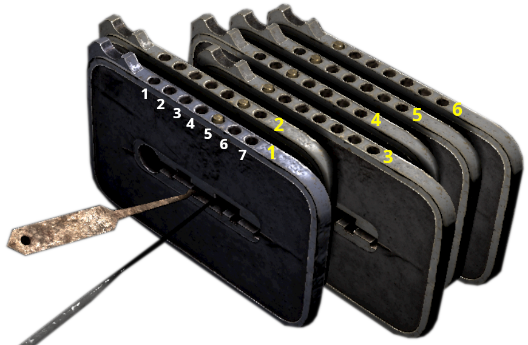

To open the lock in Gothic 1 Rename, you need to solve a puzzle. It involves arranging all sliders so that every pin aligns on a single line at position 4 (the&snexact center). The difficulty comes from the feedback coupling between the sliders - when you move one slider, others may change their positions at the same time.
5, 6, 1, 3, 2, 1
Initial pins state: 5 6 1 3 2 1
Slider 1: -4
Slider 2: -1 4 -6
Slider 3: -6
Slider 4: 2 6
Slider 5: 2 -6
Slider 5: 4